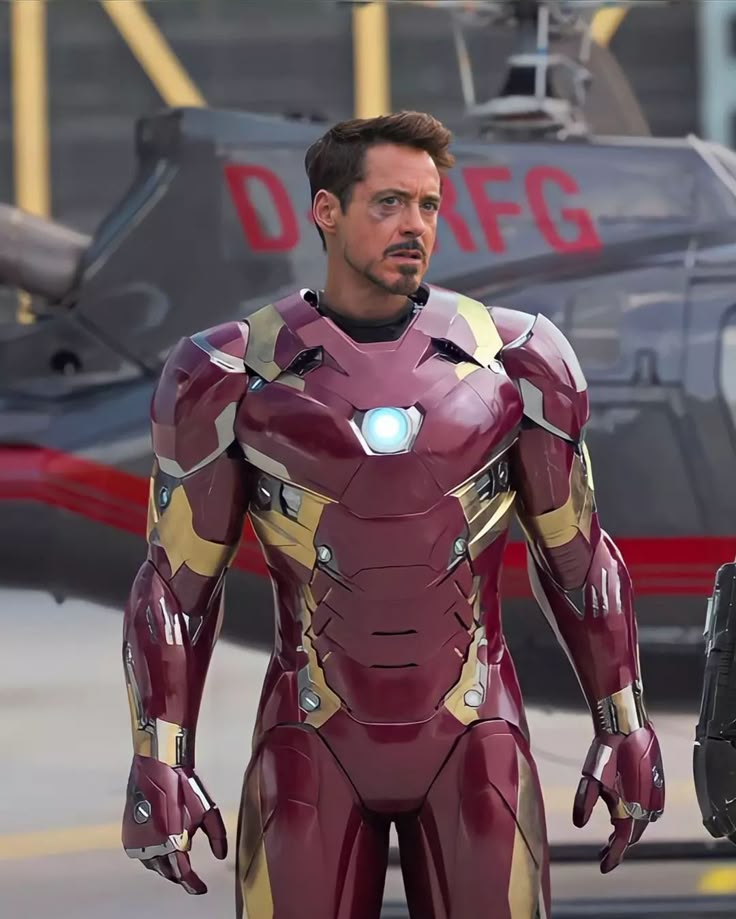

Iron man
Iron Man is one of Marvel's most iconic superheroes. His real name is Tony Stark, a brilliant
inventor, engineer, and businessman who serves as the CEO of Stark Industries.Tony Stark was once a
wealthy and arrogant weapons manufacturer. During a business trip, he was captured by terrorists and
seriously injured. While being held captive, he built a powerful armored suit and an Arc Reactor to
keep himself alive. Using his intelligence and engineering skills, he escaped and returned home with
a new purpose.After realizing that his weapons had caused harm around the world, Tony decided to
stop manufacturing weapons and dedicate his life to protecting others. He improved his armored suits
and became the superhero known as Iron Man.Iron Man does not possess any superpowers. Instead, he
relies on his extraordinary intelligence, creativity, and advanced technology. His suits are
equipped with flight capabilities, powerful weapons, artificial intelligence systems, and
cutting-edge defense mechanisms.Throughout his journey, Tony Stark grows from a self-centered
billionaire into a responsible and selfless hero. His courage, determination, and willingness to
sacrifice himself for others have made him one of the most beloved characters in the Marvel
Universe.